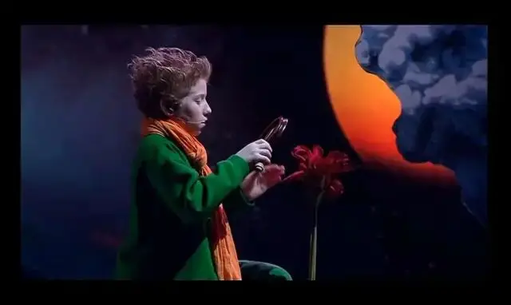
《小王子》中这样描述爱。
有一朵玫瑰告诉小王子，说她是全宇宙独一无二的一朵。
果然，随着这朵玫瑰的盛开，她的美让小王子陶醉。
小王子爱上了这朵玫瑰。
每当小王子想到自己爱上的是亿万颗星球中独一无二的一朵花时，他就觉得很幸福。
有一天，小王子来到地球，来到一座玫瑰花园。
里面有五千朵一模一样的花朵。
这让他非常悲伤。
原来，他的那朵玫瑰并非独一无二。
仅仅这座花园就有五千多完全一样的花朵。
为此，他躺在草丛中哭泣起来。
这时，有一只狐狸出来告诉小王子。
那朵玫瑰依旧是你独一无二的一朵花，因为你驯服了她。
小王子问狐狸，什么是驯服。
狐狸告诉他，驯服就是建立联系。
狐狸进一步举例到：
对我来说，你还只是一个小男孩，就像其他千万个小男孩一样。
我不需要你，你也同样永不找我。
对你来而，我也不过是一只狐狸，和其他千万只狐狸一样。
但是，如果你驯服了我，我们就互相不可缺少了。
对我来说，你就是世界上唯一的了。
我对你来说，也是世界上的唯一的了。
狐狸的话让小王子豁然开朗。
那朵玫瑰是小王子浇灌的。
也是小王子用屏风一直保护的。
那朵玫瑰身上的毛虫也是小王子除灭的。
小王子也聆听了那朵玫瑰所有的哀怨、沉默以及骄傲。
这就是小王子对玫瑰花的驯服。
正因为小王子为玫瑰花了那么多时间和精力。
所以，对于小王子来说，那朵玫瑰便是全宇宙间最独一无二的一朵。
无人可以取代！
这就是爱。
《小王子》里这只狐狸的话让无数人触动。
这只狐狸也同样感动了法国导演吕克.雅克。
△ 吕克·雅克，法国导演、摄影师，代表作品有获得奥斯卡最佳纪录长片的《帝企鹅日记》以及反映孩童与动物友谊的《狐狸与我》。
他从中获得灵感，将《小王子》里的故事进行了改编，拍摄了高分作品《狐狸与我》。
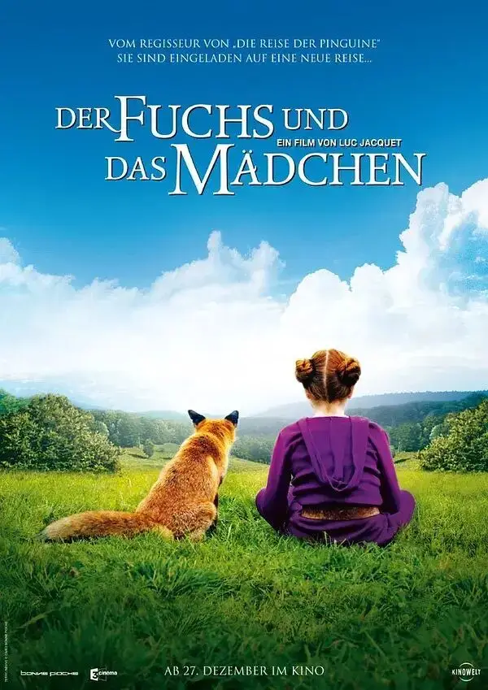
《狐狸与我》再次以孩童般的童真表现了什么是爱。
这部改编电影里，狐狸是那只玫瑰。
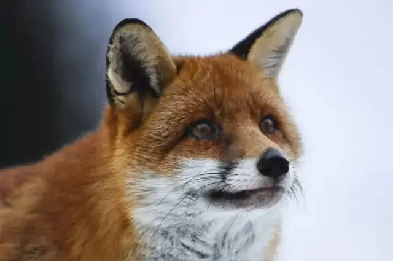
小王子换成了一个十岁的小女孩。

故事缘自于小女孩和一只狐狸偶然的邂逅。
这次相遇，小女孩得以第一次这么近距离的看到一只狐狸。
灵动的眼睛，毛绒绒的外表，高贵的姿态.....
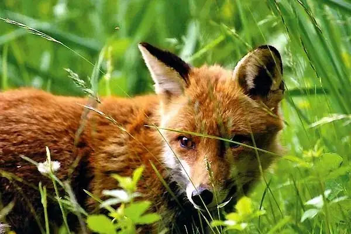
狐狸的美让小女孩的心都融化了。
小女孩暗下决心，她要拥有这只狐狸，要成为她的好朋友。
小女孩想要驯服这只狐狸。
于是，小女孩先是在他们相遇的地方，连续等了好几天。
可迟迟等不到狐狸的出现。
后面，小女孩开始在森林中寻找，直到不小心将腿摔伤。
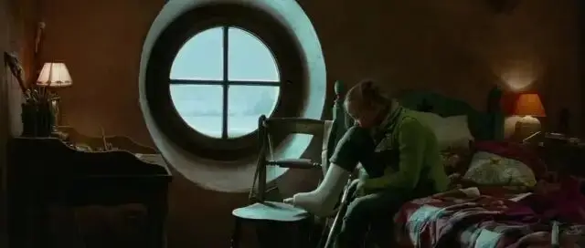
伤了腿，她只能躺在床上呆望着远处的森林，心里不停地惦记着狐狸的处境。
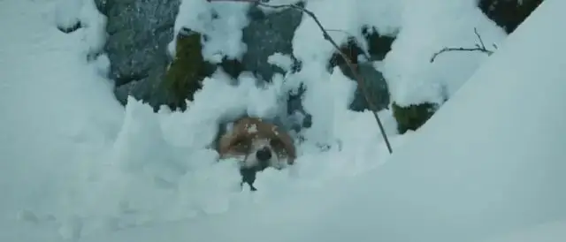
他会不会被其他猛兽伤害，他到底在哪里。
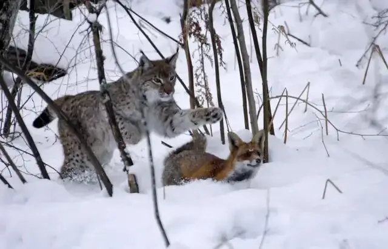
在家休息的时间里，小女孩通过书籍学习和了解着狐狸的习性。
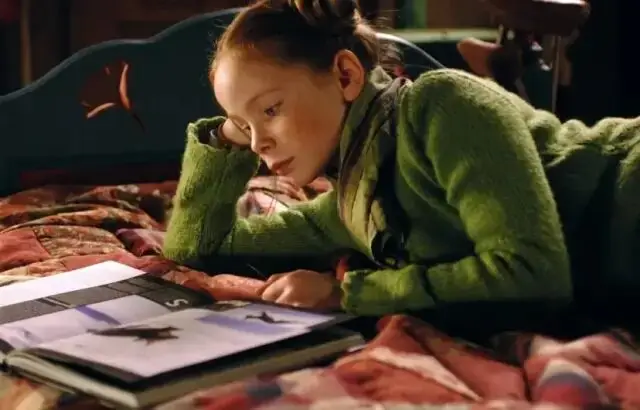
这些都可以帮助她走近那个梦想中的狐狸。
腿养好后，小女孩再次迫不及待地冲进了森林中。
凭着一直以来对狐狸习性的了解，她终于找到了狐狸的洞穴。
她守在洞口很长时间，直到和狐狸四目相对。
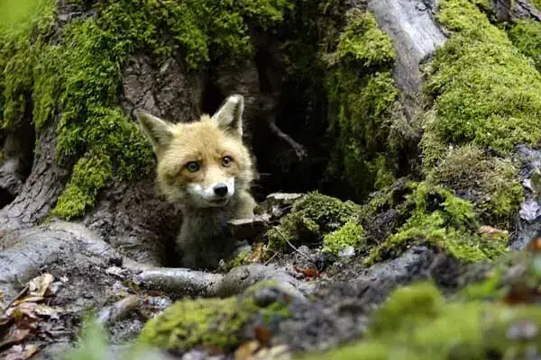
可警觉的狐狸再次飞速消失在她的视线之外。
接着，小女孩每天用三明治吸引着狐狸的到来。
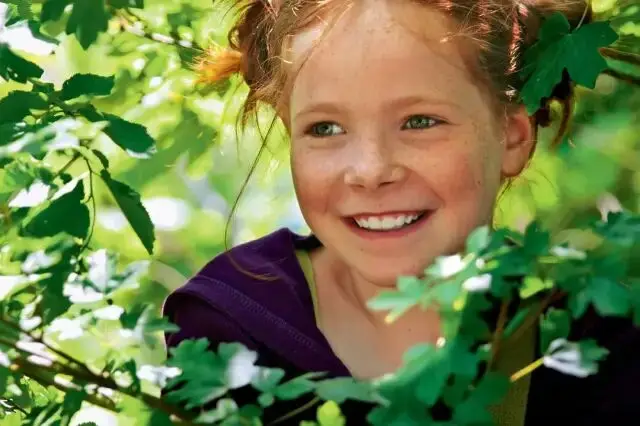
就这样，一步又一步，小女孩花了近一年的时间驯服了狐狸。
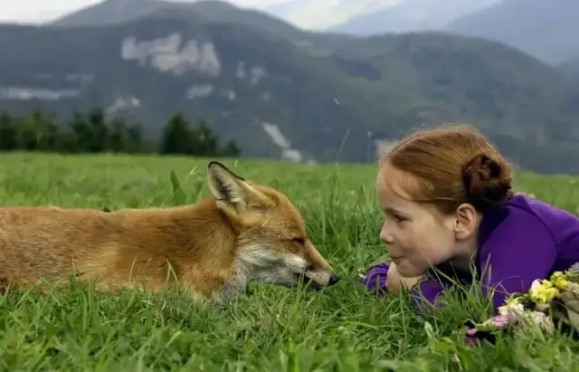
狐狸也将小女孩当成了最好的朋友。
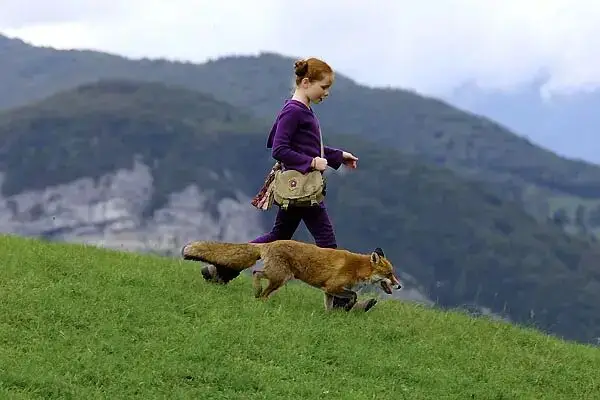
狐狸带着小女孩进入森林深处，让她领略了森林里不为人知的美丽和神秘。
当小女孩在森林中迷路而惊慌失措时，狐狸睡在小女孩身边，陪她度过可怕的黑夜。
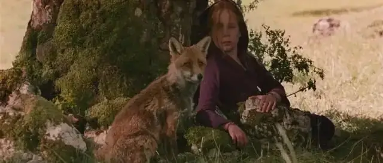
每天，狐狸在山顶上目送着小女孩上学。
之后狐狸会一直在那里等待，直到小女孩放学归来。
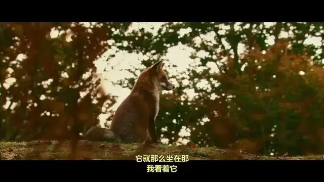
瞬间，爽朗的笑声充满在整个森林中，两人好像成为了森林里最开心的精灵。
直到有一天，小女孩看着可爱的狐狸卧在一旁。
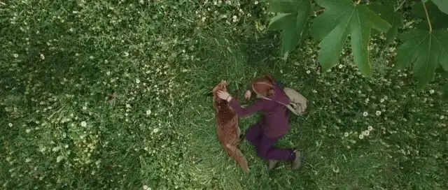
便不禁拿出一个丝带系在狐狸的脖子上，并高兴地向狐狸宣告，这就是你的项圈了。
就像大人世界对待宠物狗一样，这条项圈宣告了女孩对狐狸的主权。
可这条陌生的项圈却让狐狸变的非常不安，狐狸开始发出愤怒的嘶吼，想要挣脱这条项链。
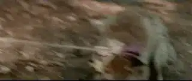
小女孩却死死地拉着项圈，直到狐狸在惊慌中逃离。
一时，小女孩呆在原地，不知所措。
女孩以为狐狸再也不理他了。
可没想到，第二天，狐狸竟然出现在自己的房子外面。
失而复得，小女孩激动坏了，立马带狐狸来自己家玩。
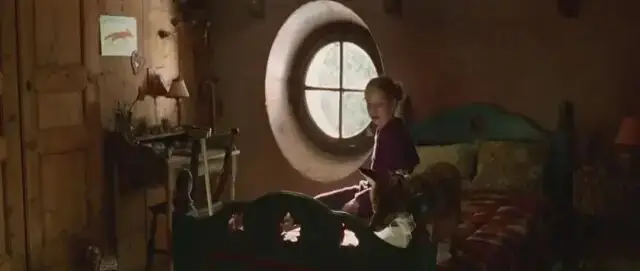
第一次这么近距离的进入人类世界。
狐狸一边很警觉地观察着身边的一切。
一边又因着对身边这位“朋友”的信任选择一直向前。
终于，狐狸跟着小女孩来到了她的房间。
之后，小女孩近乎本能地将房间门关上，这样狐狸便不会再无故消失了。
可当小女孩将门关上时，狐狸一下子变的无比惊慌。
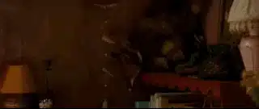
狐狸拼命地上蹿下跳寻找出口，杯具、家具碎了一地。
女孩被眼前的情况吓得呆住了。
最后，狐狸冲向窗户。
随着一声巨响，窗户被撞碎，狐狸从二楼摔落在地面，倒在一片血泊中一动也不动......
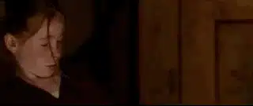
这就是《狐狸与我》里告诉我们的爱。
我们太容易将爱和占有混淆。
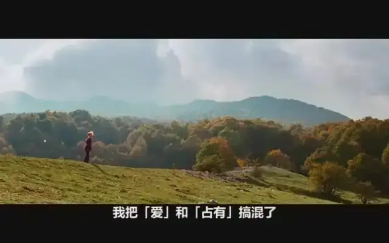
总会习惯以爱之名去占有和控制对方。
就像自己喜欢吃巧克力，总是习惯一口将巧克力吞到肚子里。
爱一个人，我们也想完全占有他，可对方并不是一块巧克力，而是和你一样有着灵魂和思想的人。
如果以占有和控制去爱对方，反而会将爱窒息。
这一点很值得我们深思。
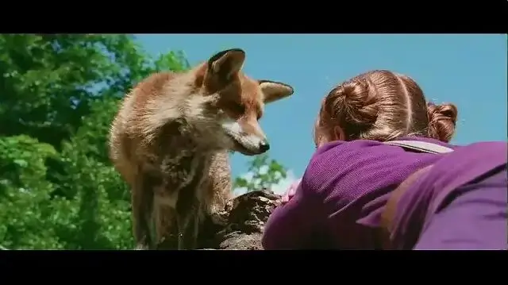
儿童作品，总能够借着孩子从大人世界的复杂和虚伪中跳离出来，将目光对准问题的关键。
《小王子》里强调了爱的责任，如果你驯服了对方，那你就要向对方负责。
所以，小王子要包容那朵玫瑰的骄傲和虚浮，重新回到她的身边。
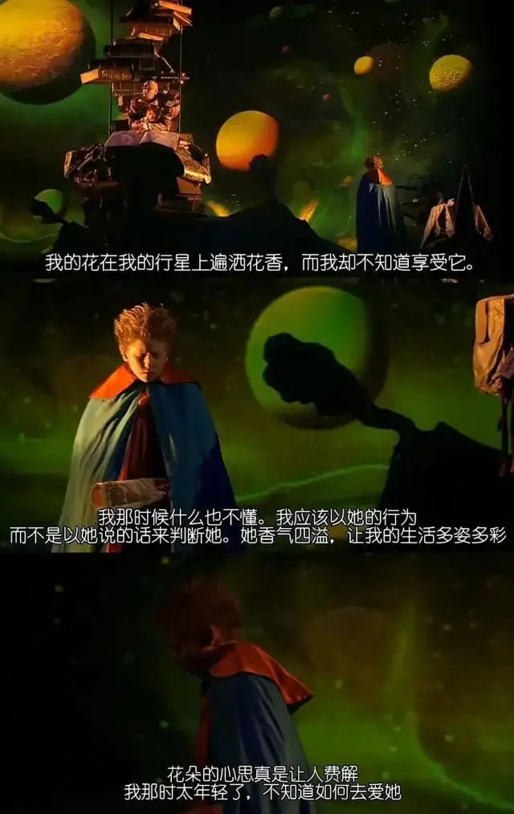
《狐狸与我》里强调了爱的方式，驯服了对方并不等于对方成为了你的私人玩物。
而是需要尊重对方，给对方一定的空间。
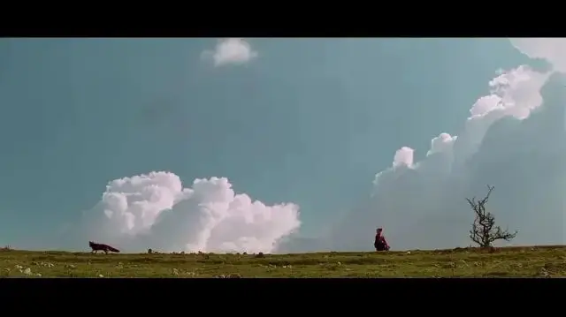
强调责任，是因为爱的承诺。
强调适当放手，也是为了更好的实践爱的诺言。
这两部作品背后展现的都是一种利他的爱。
这一点也恰是今日社会很多病症的原因。
现代社会中强调自我表达和自我实现。
爱也不免沦为实现自我的一个手段。
曾经听到一个朋友义正言辞地讲她为什么要离婚。
主要因为对方不论在见识还是收入上，和自己不在一个段位，自己在这段婚姻中得不到任何成长......
如果爱不能给予自己快感和回报，这种爱便是毫无价值的。
这就是现代人的扭曲。
没想到，自己心心念念的爱，到头来竟然成为了一笔精打细算的生意。
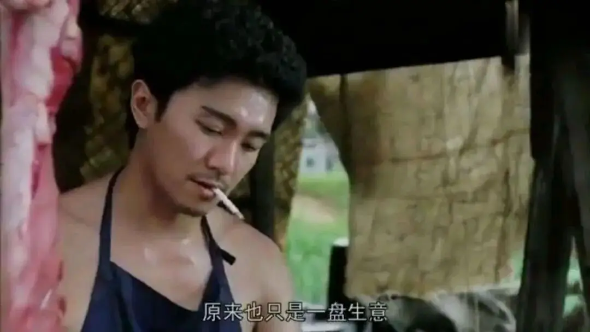
这就是一种堕落，一种对于人类神圣情感的背叛。
所以，圣经中强调：
“爱是恒久忍耐，又有恩慈。爱是不嫉妒，爱是不自夸，不张狂，不做害羞的事，不求自己的益”。
这不仅是一条道德准则，更是一条最大的诫命。
它就像一面镜子，照出了我们的贫瘠，也照出了我们的软弱和需要。
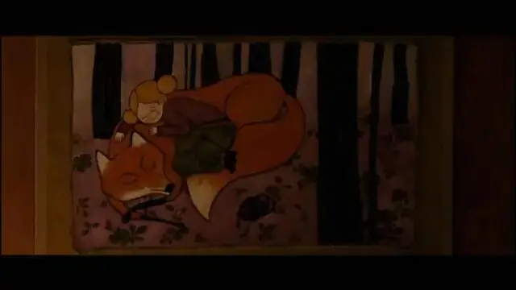
这里没有挑逗你眼目情欲的小鲜肉
也没有挑动你肉体情欲的段子
更没有膨胀你今生骄傲的鸡血
我们只在乎那些最质朴真诚的作品
在那里我们才能恢复真正的想象力
我们也坚信这才是我们真正需要的

ID:Six_hundred_hits
长按二维码，一键关注
【六百击】
电影评论
尽情分享朋友圈

微信二维码打赏通道